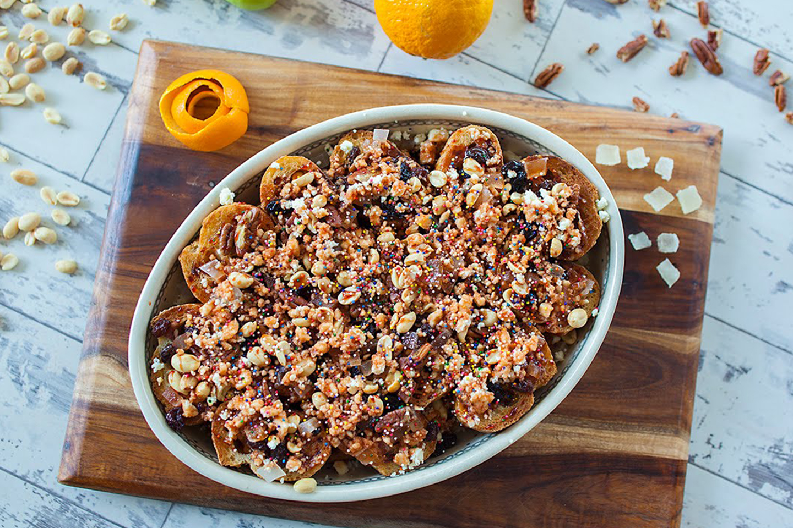

Capirotada
La capirotada es un dulce popular en estados del centro y norte
de México, que consiste en pan con nueces, maní, pasas de
uva, plátano, guayaba y queso, endulzado con piloncillo.
Se emplea cualquier pan, sobre todo los bolillos
que sobran y se endurecen.
________________________________________